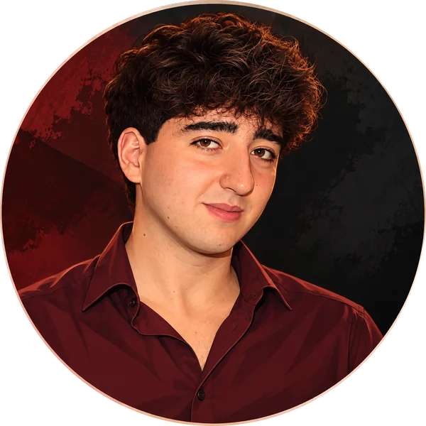

Traduzioni su commissione e ripetizioni online di inglese, spagnolo e portoghese.

Ho 22 anni e mi occupo di traduzione e insegnamento di inglese, spagnolo e portoghese. Voglio che ogni testo suoni naturale nella lingua di arrivo e che ogni lezione parta da ciò che ti serve davvero.
Da inglese, spagnolo e portoghese all'italiano, e viceversa.
Documenti, contenuti web e social, testi accademici. Il preventivo è su misura per ogni testo.
Lezioni individuali a distanza.
Grammatica, conversazione, supporto allo studio e agli esami, a partire dal tuo livello.
Mi racconti il testo o cosa vuoi imparare.
Preventivo e tempi chiari, o un piano di lezioni su misura.
Se qualcosa non ti convince, lo sistemiamo insieme.
Inglese, spagnolo e portoghese, da e verso l'italiano.
Dipende dal testo o dal percorso. Scrivimi e ti preparo una proposta su misura.
Online, in lezioni individuali. Orari e piattaforma si concordano insieme.
Basta una mail con il testo o il file in allegato: ti rispondo con tempi e preventivo.
Scrivimi due righe su cosa ti serve: ti rispondo con un preventivo o una proposta di lezione.